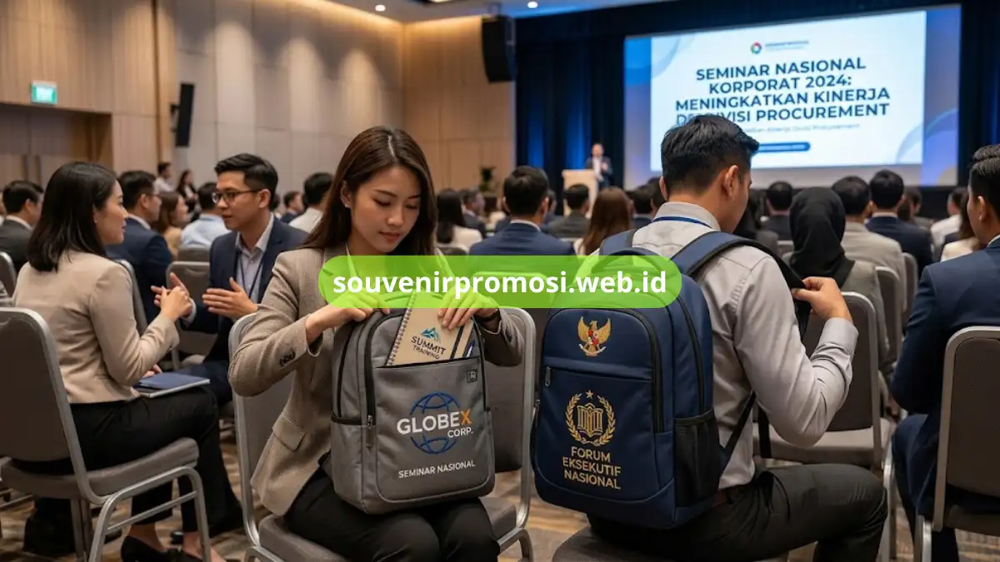

Tas ransel seminar custom untuk souvenir promosi adalah tas berbahan kanvas atau parasut yang dicetak logo perusahaan, dipakai instansi dan korporat sebagai kit peserta seminar, pelatihan, atau acara resmi. Souvenir Promosi menyediakan sepuluh model siap produksi massal dengan harga kompetitif dan pengerjaan cepat.
Divisi procurement dan panitia seminar sering kesulitan menentukan model tas ransel yang tepat sebagai souvenir promosi karena banyaknya pilihan bahan, ukuran, dan harga di pasaran. Artikel ini merangkum sepuluh model tas ransel seminar custom yang paling diminati instansi dan korporat, lengkap dengan karakteristik masing-masing model.
Poin Penting
- Ada sepuluh model tas ransel seminar custom yang paling banyak dipesan instansi dan korporat.
- Bahan yang umum dipakai antara lain kanvas, parasut, dan Oxford dengan ketahanan berbeda.
- Souvenir Promosi melayani custom logo, warna, dan ukuran sesuai kebutuhan acara.
- Harga per pcs makin kompetitif seiring bertambahnya jumlah pemesanan.
- Pemesanan dapat dilakukan langsung melalui katalog online di situs Souvenir Promosi.
Daftar Isi
10 Model Tas Ransel Seminar Custom
Setiap model pada daftar ini tersedia di katalog Souvenir Promosi dan dapat dipesan dengan sistem custom logo, custom warna, dan skema harga grosir. Pemilihan model yang tepat berdampak langsung pada persepsi merek instansi di mata peserta seminar, sehingga pertimbangan bahan dan desain menjadi krusial sebelum melakukan pemesanan dalam jumlah besar.
1. Tas Ransel Seminar Kanvas Custom Logo
Tas ransel seminar kanvas custom logo adalah model paling populer untuk souvenir promosi karena permukaannya rata dan cocok untuk sablon atau bordir logo instansi berukuran besar. Material kanvas memberi kesan formal dan tahan lama, sering dipilih oleh perusahaan korporat dan lembaga pemerintahan untuk seminar nasional maupun pelatihan internal.
Tas ini biasanya dilengkapi satu kompartemen utama, saku laptop, dan saku depan untuk alat tulis. Souvenir Promosi menyediakan varian kanvas 12 oz dan 16 oz sesuai anggaran dan tingkat ketahanan yang dibutuhkan instansi pemesan.
2. Tas Ransel Seminar Parasut Ringan
Tas ransel seminar parasut ringan cocok untuk acara dengan peserta yang banyak berpindah lokasi, seperti seminar multi-sesi atau kunjungan lapangan. Bobotnya jauh lebih ringan dibanding kanvas sehingga nyaman dibawa peserta sepanjang hari.
Model ini umumnya menggunakan sablon digital printing full color yang membuat logo dan elemen visual perusahaan tampak lebih tajam. Souvenir Promosi merekomendasikan model ini untuk anggaran souvenir promosi yang lebih terbatas namun tetap ingin tampilan modern.
3. Tas Ransel Seminar Oxford Waterproof
Tas ransel seminar Oxford waterproof menggunakan bahan polyester Oxford yang dilapisi coating anti air, sehingga dokumen dan perangkat elektronik peserta lebih terlindungi saat cuaca tidak menentu. Model ini banyak dipesan instansi yang menyelenggarakan seminar outdoor atau kegiatan lapangan.
Selain fungsi proteksi, tekstur Oxford memberi tampilan premium yang meningkatkan nilai persepsi souvenir promosi di mata peserta dan tamu undangan.
4. Tas Ransel Seminar Kompartemen Laptop
Tas ransel seminar dengan kompartemen laptop dirancang khusus untuk peserta yang membawa perangkat kerja selama seminar atau pelatihan korporat. Kompartemen ini biasanya dilapisi busa pelindung dan berukuran hingga 14 inci.
Model ini menjadi favorit instansi teknologi, perbankan, dan pendidikan karena fungsinya yang praktis sekaligus tetap bisa dicustom logo pada bagian depan tas.
5. Tas Ransel Seminar Kit Lengkap dengan Aksesori
Tas ransel seminar kit lengkap dikemas bersama aksesori tambahan seperti botol minum, notebook, dan pulpen dalam satu paket souvenir promosi. Model ini cocok untuk instansi yang ingin memberikan kesan mewah kepada peserta seminar tanpa mengurus pengadaan barang secara terpisah.
Souvenir Promosi menyusun paket kit ini sesuai anggaran, mulai dari kombinasi dua item hingga lima item pelengkap dalam satu tas ransel.

6. Tas Ransel Seminar Warna Custom Sesuai Brand Guideline
Tas ransel seminar dengan warna custom memungkinkan instansi menyesuaikan warna tas dengan identitas visual atau brand guideline perusahaan secara konsisten. Konsistensi warna ini penting terutama untuk korporat yang memiliki standar branding ketat di seluruh materi promosi.
Souvenir Promosi menyediakan pilihan warna dasar polos maupun kombinasi dua warna untuk kebutuhan ini.
7. Tas Ransel Seminar Ukuran Compact untuk Pelajar dan Mahasiswa
Tas ransel seminar ukuran compact dirancang untuk kegiatan yang melibatkan peserta pelajar atau mahasiswa, seperti seminar kampus, workshop, atau job fair. Ukurannya lebih kecil dari model korporat namun tetap memiliki ruang untuk modul dan alat tulis dasar.
Model ini sering dipilih karena harga produksinya lebih efisien untuk pemesanan dalam jumlah sangat besar.
8. Tas Ransel Seminar Model Sling atau Selempang
Tas ransel seminar model sling menjadi alternatif bagi instansi yang menginginkan souvenir promosi dengan bentuk lebih kasual dan ringkas. Model ini populer untuk seminar singkat atau talkshow dengan durasi satu hari.
Meskipun berukuran lebih kecil, area depan tas tetap cukup luas untuk penempatan logo instansi secara jelas.
9. Tas Ransel Seminar Bahan Daur Ulang Ramah Lingkungan
Tas ransel seminar berbahan daur ulang menyasar instansi yang mengusung tema keberlanjutan dalam acara mereka. Bahan ini biasanya berasal dari serat daur ulang atau kanvas organik yang tetap kuat untuk pemakaian sehari-hari.
Pemilihan model ini turut memperkuat citra tanggung jawab lingkungan instansi di mata peserta dan publik.
10. Tas Ransel Seminar Custom Full Bordir Premium
Tas ransel seminar dengan finishing bordir memberikan kesan paling premium dibanding sablon digital maupun sablon manual. Detail benang bordir pada logo membuat tas terlihat lebih elegan dan cocok untuk seminar tingkat eksekutif atau acara kenegaraan.
Model ini biasanya dipilih instansi yang ingin souvenir promosi bertahan lama sebagai koleksi peserta, bukan sekadar dipakai sekali acara.
Berapa Kisaran Harga Tas Ransel Seminar Custom untuk Souvenir Promosi?
Harga tas ransel seminar custom umumnya ditentukan oleh bahan, jenis finishing logo, dan jumlah pemesanan. Semakin besar kuantitas pesanan, semakin kompetitif harga per pcs yang ditawarkan.
Sebagai gambaran umum, model kanvas atau parasut standar berada di kisaran harga menengah, sementara model dengan bordir premium atau kit lengkap aksesori berada di kisaran harga lebih tinggi. Souvenir Promosi menyediakan simulasi harga sesuai spesifikasi melalui katalog online tanpa minimum order yang memberatkan instansi kecil.
Bagaimana Proses Pemesanan Tas Ransel Seminar Custom di Souvenir Promosi?
Proses pemesanan dimulai dari konsultasi kebutuhan, pemilihan model dan bahan, pengiriman desain logo, hingga proses produksi dan pengiriman ke lokasi instansi. Tim Souvenir Promosi mendampingi mulai dari tahap mock up desain sampai quality control sebelum barang dikirim.
Segera cek katalog tas ransel seminar custom dan ajukan pemesanan sekarang melalui souvenirpromosi.web.id untuk kebutuhan souvenir promosi korporat Anda.
Kesalahan Umum yang Perlu Dihindari saat Memilih Tas Ransel Seminar
Instansi sering terjebak memilih bahan termurah tanpa mempertimbangkan durabilitas, sehingga logo cepat pudar atau jahitan mudah lepas sebelum acara selesai. Kesalahan lain adalah mengabaikan waktu produksi, padahal proses custom logo dan bordir membutuhkan lead time tertentu sebelum hari pelaksanaan.
Berkonsultasi lebih awal dengan tim Souvenir Promosi membantu instansi menghindari kedua risiko tersebut sekaligus memastikan souvenir promosi siap tepat waktu.
Sepuluh model tas ransel seminar custom di atas memberi gambaran lengkap bagi instansi dan korporat dalam menentukan souvenir promosi yang sesuai kebutuhan acara, mulai dari bahan, fungsi, hingga tingkat finishing logo. Dengan pilihan yang beragam, procurement dan panitia seminar dapat menyesuaikan model dengan anggaran serta identitas brand yang ingin ditampilkan.
Souvenir Promosi siap membantu mewujudkan souvenir tas ransel seminar custom berkualitas melalui proses pemesanan yang mudah dan cepat. Kunjungi katalog lengkap di souvenirpromosi.web.id dan pesan sekarang untuk kebutuhan souvenir promosi korporat Anda.